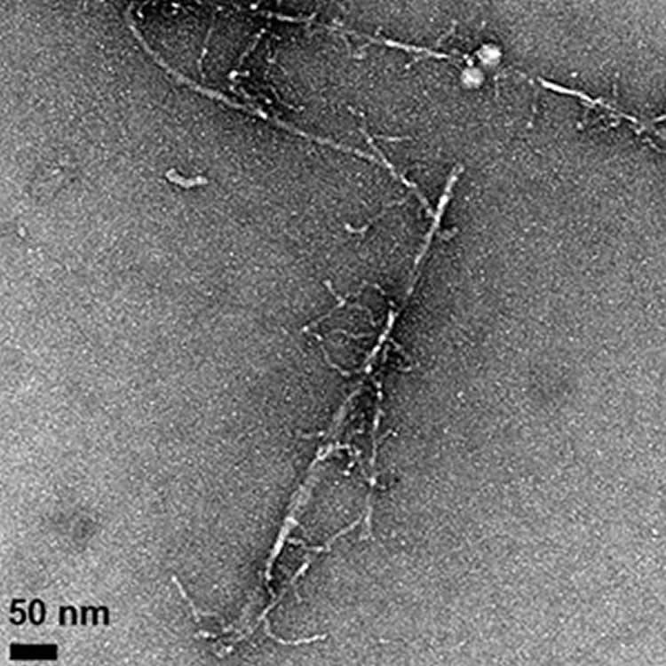

New Clues to Toxic Forms of Amyloid Beta in Alzheimer’s
Source: UC Santa Cruz.
A subtle change to the amyloid beta protein affects its aggregation behavior and stabilizes an intermediate form with enhanced toxicity.
Much of the research on Alzheimer’s disease has focused on the amyloid beta protein, which clumps together into sticky fibrils that form deposits in the brains of people with the disease. In recent years, attention has turned away from the fibrils themselves to an intermediate stage in the aggregation of amyloid beta. “Oligomers” consisting of a few molecules of the protein stuck together are more mobile than the large, insoluble fibrils and seem to be much more toxic. But the actual structure of these soluble oligomers remains unknown, and it’s unclear how they trigger the neurotoxic effects that lead to Alzheimer’s disease.
A new study by researchers at UC Santa Cruz may help lift the veil on the structure and behavior of these neurotoxic oligomers. The researchers made a subtle alteration to the amyloid beta protein that had striking effects on its properties. By replacing one amino acid with its mirror image, they created a version of amyloid beta with a reduced rate of fibril formation, different fibril structure, and increased toxicity in cell culture compared to the normal or “wild type” protein.
“We perturbed the system very slightly and got enhanced cytotoxicity and destabilization of fibrils,” said Jevgenij Raskatov, assistant professor of chemistry and biochemistry at UC Santa Cruz and corresponding author of a paper on the findings to be published in Chemistry – A European Journal. The accepted article has been posted online prior to editing and formal publication of the final version of record.
Most amino acids can occur in two mirror-image forms, a “left-handed” or L-form and a “right-handed” or D-form, but living cells only make proteins out of L-amino acids. Raskatov’s team changed one amino acid in the amyloid beta protein to its D-form: the glutamate at position 22.
“This subtle change stabilizes a prefibrillary intermediate that has higher toxicity,” he said, noting that the stable intermediate could be a very useful tool for investigating the neurotoxic effects of amyloid beta oligomers. The role of the amyloid beta protein in Alzheimer’s disease is complicated and remains poorly understood. With a better understanding of the molecular mechanisms underlying the disease, researchers hope to identify new targets for drug development efforts.
Several mutations associated with inherited early-onset Alzheimer’s disease affect position 22 in the amyloid beta protein, either changing it from glutamate to another amino acid or deleting it. The new findings underscore the importance of the amino acid at position 22 for amyloid beta toxicity.
Raskatov’s team–postdoctoral researchers Christopher Warner (first author) and Subrata Dutta and graduate student Alejandro Foley–used a variety of techniques to investigate the properties of the altered amyloid beta protein and the oligomers and fibrils it forms. Using small-angle x-ray scattering analysis, they found evidence that the protein forms a soluble oligomer with an ordered structure.
“The scattering experiment provided an indication of structure, and there is a chance we can use this information to gain some structural insights,” Raskatov said. “We’re pretty excited about that, because if we can understand the structure of the neurotoxic oligomers, that could help efforts to design molecules to disrupt them.”
Read More at NeuroSciencNews